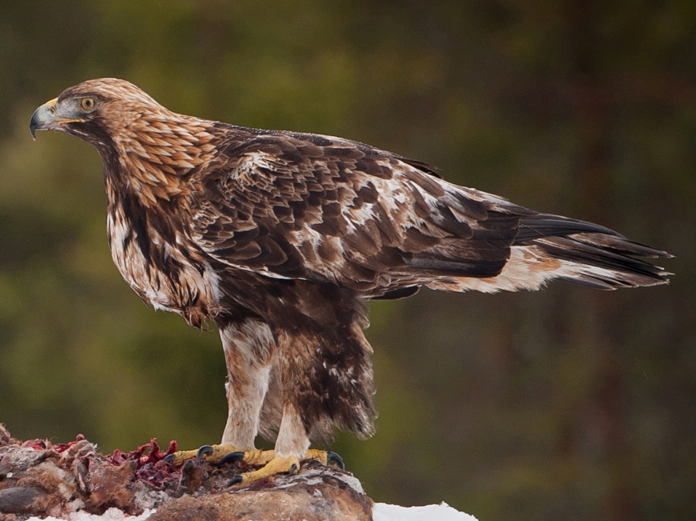

Calling
Golden Eagles are not big talkers.
Their occasional calls tend to be high, weak, and whistled.
You're most likely to hear these birds during breeding season,
when nestlings' high-pitched begging calls can travel a mile or more,
and adults announce food deliveries with a wip or a wonk.
Habitat
These majestic birds range from Mexico through much
of western North America as far north as Alaska.
They also appear in the east but are uncommon.
Golden eagles are also found in Asia,
northern Africa, and Europe.
Behaviour
They are monogamous and may remain with their
mate for several years or possibly for life.
Golden eagles nest in high places including
cliffs, trees, or human structures such as telephone poles.
They build huge nests to which they
may return for several breeding years.
Diet
Golden eagles use their speed and sharp talons to snatch up
rabbits, marmots, and ground squirrels. They also eat carrion,
reptiles, birds, fish, and smaller fare such as large insects.
They have even been known to attack full grown deer.
author Arjun Kalpana Harshal Baviskar
"THANK YOU"